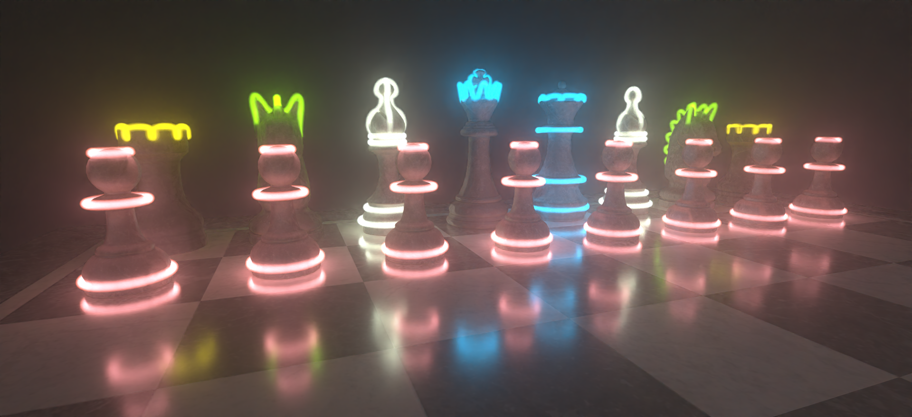

ACM SIGGRAPH 2025 · Conference Track
ACM SIGGRAPH 2025 · Conference TrackACM SIGGRAPH 2025 · Conference Track
Paper · Supplementary · Slides · Code · BibTeX

Previous research in material models for surface and volume scattering has enabled highly realistic scenes in modern rendering systems. However, there has been comparatively little study of light sources in computer graphics despite their critical importance in illuminating and bringing life into these scenes. In the real world, photons are emitted through numerous physical processes including combustion, incandescence, and fluorescence. The qualities of light produced in each of these processes are unique to their physics, making them interesting to study individually.
In this work, we propose a model for glow discharge, a form of light-emitting electrostatic discharge commonly found in Neon lights and gas discharge lamps. We take inspiration from works in computational physics and develop an efficient point-wise solver for the emission due to glow discharge suitable for traditional volume rendering systems. Our model distills the complex mechanics of this process into a set of flexible and interpretable parameters. We demonstrate that our model can replicate the visual qualities of glow discharge under varying gases.
@inproceedings{10.1145/3721238.3730674,
author = {Edavamadathil Sivaram, Venkataram and Ramamoorthi, Ravi and Li, Tzu-Mao},
title = {Modeling and Rendering Glow Discharge},
year = {2025},
isbn = {9798400715402},
publisher = {Association for Computing Machinery},
address = {New York, NY, USA},
url = {https://doi.org/10.1145/3721238.3730674},
doi = {10.1145/3721238.3730674},
booktitle = {Proceedings of the Special Interest Group on Computer Graphics and Interactive Techniques Conference Conference Papers},
articleno = {38},
numpages = {11},
series = {SIGGRAPH Conference Papers '25}
}